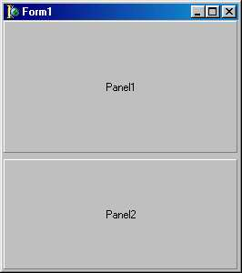

TBevel - кромка
Компонент класса TBevel носит оформительский характер и предназначен для выделения группы элементов или отделения их друг от друга. Свойство
type TBevelShape = (bsBox, bsFrame, bsTopLine, bsBottomLine, bsLeftLine, bsRightLine);
property Shape: TBevelShape;
определяет вид компонента (прямоугольник, рамка, верхняя линия, нижняя линия, левая линия, правая линия).
Свойство
type TBevelStyle = (bsLowered, bsRaised) ;
property Style: TBevelStyle;
задает стиль компонента (вдавленный или выпуклый).
TScrollBox - панель с прокруткой
Компонент класса TScrollBox служит контейнером для размещения других компонентов. Его отличительная особенность - возможность прокрутки и, следовательно, экономия пространства формы при необходимости размещения на ней большого количества управляющих элементов. Замечу, что современные программные продукты относительно редко используют такого рода компоненты, отдавая предпочтение многолистным блокнотам с закладками. Наиболее походящей областью применения компонентов является размещение на них относительно длинных TEdit, TComboBox, Tmemo и т.п.
Использование компонента не отличается сложностью: положите его на форму и размещайте затем на нем другие компоненты. Если очередной компонент выйдет за пределы рабочей области TScrollBох, по сторонам контейнера возникнут полосы прокрутки .
Однако если свойство AutoScroll компонента содержит False, полосы прокрутки не появятся, и компонент будет отсекать “лишние” части своих дочерних компонентов. Еще одним важным свойством компонента является AutoSize: если это свойство имеет значение True, размеры компонента будут автоматически изменяться так, чтобы все части дочерних компонентов были в его рабочей зоне, даже если для этого придется увеличить размеры внешнего контейнера (формы). С помощью свойств HorzScrollBar и VertscrollBar программист может управлять свойствами каждой из полос прокрутки в отдельности.
TGroupBox - панель группирования
Этот компонент служит контейнером для размещения дочерних компонентов и представляет собой прямоугольное окно с рамкой и текстом в разрыве рамки. Обычно с его помощью выделяется группа управляющих элементов, объединенных по функциональному назначению. Свойства и методы этого класса целиком унаследованы им от своих предков TCustomControi и TWincontrol.
TSplitter - компонент для изменения размеров
Компонент TSplitter предназначен для ручного (с помощью мыши) управления размерами контейнеров TPanel1, TGroupBox или подобных им во время прогона программы. Визуально он представляет собой небольшую вертикальную или горизонтальную полосу, располагающуюся между двумя соседними контейнерами или на “свободной” стороне одного их них.
Непременным условием правильной работы компонента является выравнивание контейнера (контейнеров), размерами которого (которых) он управляет, вдоль одной из сторон окна или охватывающего контейнера. Для примера на рис. 18.14 показаны две панели, разделенные компонентом TSpiitter. Нижняя панель имеет Align = alBottom, верхняя в этом случае может иметь выравнивание alBottom или alciient. Между ними помещен TSplitter с выравниванием alBottom.
Свойства компонента:
|
property Beveled: Boolean; |
Управляет трехмерным изображением компонента. Если False, компонент виден как узкая полоска фона между разделяемыми им компонентами него |
|
NaturalNumber = 1..High(Integer) ; |
Содержит минимальный размер любого из компонентов, которые разделяет TSplitter. |
|
property MinSize: Natural-Number; |
Если выравнивание aiLeft или aiRight - минимальная ширина компонента слева и справа от TSplitter, если alTop или alBottom -минимальная высота компонента выше или ниже от него |
Для компонента определено событие onMoved, которое вызывается при любом перемещении компонента мышью.

Рис. 18.14 . Пример использования компоненты TSplitter (помечен черными квадратиками)